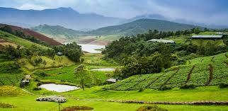
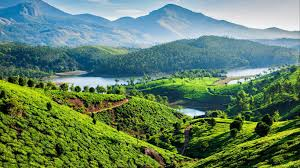
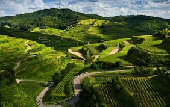
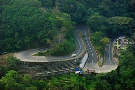

1. Ooty
Ooty was one of the first hill stations I visited.The cool climate, lush green hills, and tea gardens made the trip refreshing. The visit to Ooty Lake and the toy train ride were memorable experiences.

2. Munnar
Munnar is famous for its misty mountains and tea plantations.The peaceful environment and scenic viewpoints made the trip relaxing. Walking through the tea estates and enjoying the fresh air was a wonderful experience.

3. Taj Mahal (Agra)
Visiting the Taj Mahal was a unique experience.The architectural beauty and historical importance of the monument were truly impressive. Seeing the Taj Mahal in person helped me understand why it is considered one of the wonders of the world.

4. Coorg (Kodagu)
Coorg is known for its coffee plantations and pleasant weather. The greenery and calm surroundings made the trip enjoyable. Visiting waterfalls and coffee estates was a refreshing experience.

5. Wayanad
Wayanad is rich in natural beauty and wildlife. The forests, waterfalls, and hills made the visit adventurous. Trekking and exploring the natural surroundings made this trip special and memorable.
